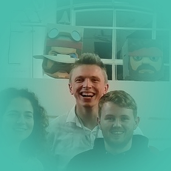

Bio
I am a self-taught Front End Web developer that enjoys going to tech meetups and learning new languages and frameworks.
My background is in relationship and incident management in the credit union sector, where I am adept at communicating with people with various levels of technical ability to resolve issues and collaborate on technical solutions. I like to find practical applications for my coding skills at work.
As well as providing 1st line support to a banking platform, I am also developing management information reporting ability for an automated credit decisioning product. I liaise between credit unions and external suppliers such as Fiserv and Experian, to iron out issues and further develop our range of products.
-William Neal
Projects